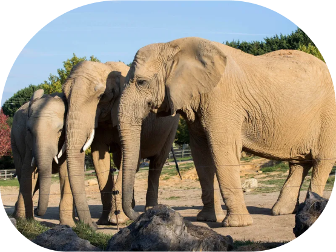

Le plus gros mammifère terrestre
Le champion des poids-lourds !
L'éléphant d'Afrique des savanes peut peser plus de 7 tonnes et mesurer jusqu'à 4 mètres de hauteur. Les seuls animaux pouvant rivaliser avec lui au concours de l’animal le plus lourd sont les cétacés, comme la baleine bleue… Aucun mammifère terrestre n’est à la hauteur. Pour alimenter ces géants, il faut d’énormes quantités de nourriture ! Chaque individu présent à Beauval ingère quotidiennement 100 à 150 kg de végétaux en tous genres (fruits, feuilles, branches…), ainsi qu'une centaine de litres d'eau. Des repas que l’on peut qualifier sans peine d’éléphantesques !

Le champion des poids-lourds !
L'éléphant d'Afrique des savanes peut peser plus de 7 tonnes et mesurer jusqu'à 4 mètres de hauteur. Les seuls animaux pouvant rivaliser avec lui au concours de l’animal le plus lourd sont les cétacés, comme la baleine bleue… Aucun mammifère terrestre n’est à la hauteur. Pour alimenter ces géants, il faut d’énormes quantités de nourriture ! Chaque individu présent à Beauval ingère quotidiennement 100 à 150 kg de végétaux en tous genres (fruits, feuilles, branches…), ainsi qu'une centaine de litres d'eau. Des repas que l’on peut qualifier sans peine d’éléphantesques !
Le Rombo Group Ranch au sud du Kenya abrite des milieux naturels
encore intacts. C’est un lieu de conservation privilégié pour de
nombreuses espèces menacées, telles que l’éléphant. Cependant les
éléphants sont en proie aux braconniers d’ivoire et à la chasse
illégale.
L’association Beauval Nature soutient la fondation Big Life qui a initié, entre autres, un ambitieux projet de surveillance et de lutte contre le braconnage au sein du ranch. Ainsi, plus de 250 rangers ont été recrutés parmi la population locale afin d’assurer des patrouilles quotidiennes et une surveillance mobile au sein du ranch.
Notes vétérinaires :
02-011-2024
Etat de l'animal : Bonne santé
Nourriture : Feuilles et branches
Quantité recommandé : 10000g
L’association Beauval Nature soutient la fondation Big Life qui a initié, entre autres, un ambitieux projet de surveillance et de lutte contre le braconnage au sein du ranch. Ainsi, plus de 250 rangers ont été recrutés parmi la population locale afin d’assurer des patrouilles quotidiennes et une surveillance mobile au sein du ranch.
Notes vétérinaires :
02-011-2024
Etat de l'animal : Bonne santé
Nourriture : Feuilles et branches
Quantité recommandé : 10000g
À propos du zoo :
Nos habitats
Services
Contact
Mentions légales
Politique de confidentialité
Nos habitats
Services
Contact
Mentions légales
Politique de confidentialité
Horaires d'ouverture
Lundi - Dimanche : 9h30 - 20h00
Lundi - Dimanche : 9h30 - 20h00
.svg)
Email : Arcadia@zoonature.fr
.svg)
Adresse : 123 Avenue de la Faune, 75000 Paris
Téléphone : +33 1 23 45 67 89
Arcadia
© 2023 Arcadia. Tous droits réservés.
Suivez-nous
Facebook Instagram Twitter
Facebook Instagram Twitter